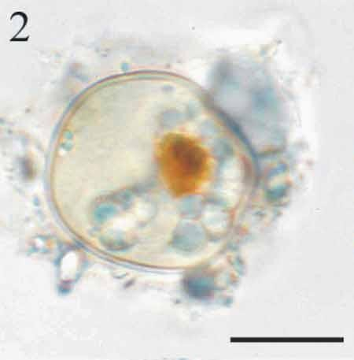

CYSTS LIST
ALEXANDRIUM
Color |
Shape |
Remarks |
Species |
Central body (um.) |
Image |
Prominent orange-red accumulation body |
Elongated to roundedCylindrical with rounded ends |
Size, shape and content |
Alexandrium catenella | 38 to 55 (L)25 to 35 (W) |
 |
Whitish content. Prominent yellow-orange accumulation body |
Cylindrical with rounded endsGranular |
Central body small |
Alexandrium kutnerae | 55 to 66 (L)32 to 35 (W) |
|
Yellow-orange accumulation body |
SphericalGranular |
Spherical shape |
Alexandrium margalefi | 40 to 45 |
|
Condensed yellow-orange accumulation body |
SphericalGranular |
Size |
Alexandrium minutum | 25 to 35 (circular D)28 to 35 (oval L) |
|
Whitish to dark granular, prominent yellow accumulation body |
FlattenedThick wall |
Flattened shape |
Alexandrium peruvianum | 50 to 53 |
|
Whitish to brownish-grey granulesMinor accumulation body |
Spherical |
Size and sometimes paratabulation |
Alexandrium pseudogoniaulax | 48 to 50 |
|
Colourless granules and a pale yellow accumulation body |
Elongate with rounded endsGranular |
Shape, size and surface |
Alexandrium tamarense | 55 (L) x 33 (W) |
|
Whitish to greyish content |
Elongate, highly flattenedGranular and thick wall |
Shape and size |
Alexandrium taylori | 40 to 45 (D) |

Extracted from Radi et al., 2013